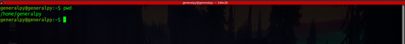
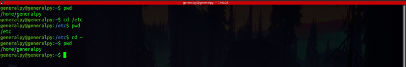
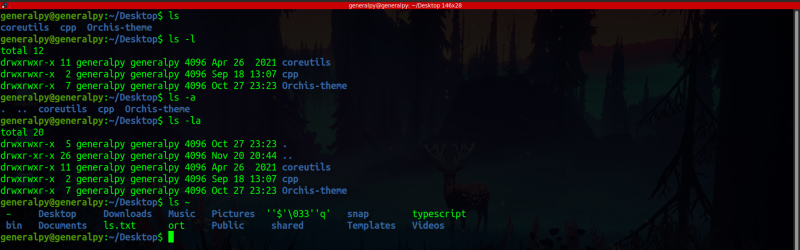
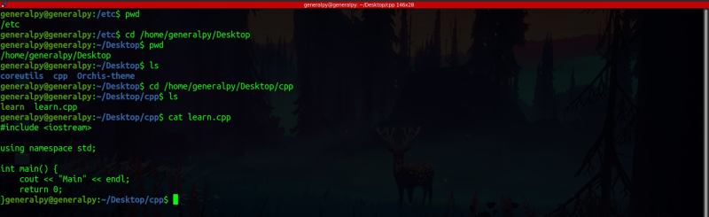
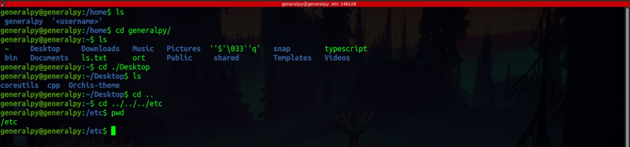
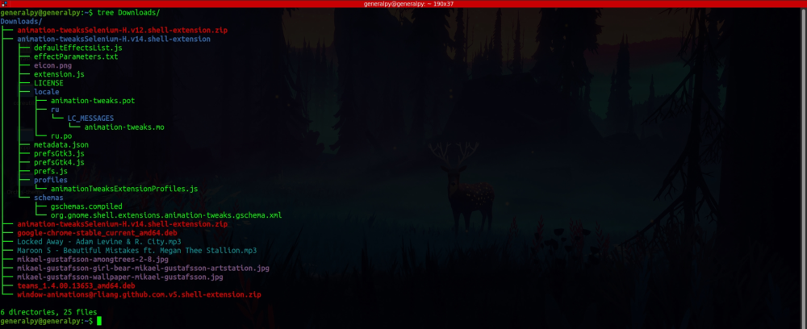

There are 3 main commands which a Linux user must know to traverse in the Linux File System.
1. pwd : Full form is Print Working Directory. As the full form states this command prints current working directory.

2. cd : Full form is Change Directory. As the full form states, this command changes current working directory. We have to pass name of target directory as a parameter.

In linux terminal, ~ refers to current user's home directory.
3. ls : Full form is List. This command shows the content of any directory. We can either pass directory path to find contents in that directory or we can pass no argument which will show current directories contents.

ls have options like -l which shows a long listing of contents which includes showing size, permissions, owner, group etc and -a which enables listing of hidden files.
Concept of path : Every file in Linux has its path which is like address of that file in system. Knowing path is very important because it will help us to perform all task we want to perform on file system.
There are 2 types of paths :
1. Absolute path : It is like a full path for a file. This path system assumes root directory(/) as its beginning and all directories follow. For example if a file is in user's desktop then its path will be /home/username/Dekstop/fileName

Some examples of using absolute path to traverse file system.
2. Relative path : This path system assumes current directory as its beginning. For example you are currently in home directory and you want to go to Desktop then the path will be ./Desktop.
There are 2 directories which are created inside every directory which contains a link to current directory and parent directory(one directory up). They are . and .. respectively. With help of these special links and relative paths we can traverse Linux fs easily. For example if you want to go one directory up you can simply use cd .. instead of writing full absolute path.
s
There is a command known as tree which is a windows command which can also be installed on Linux. This command lists directories just like ls but more in a tree like manner. This command lists everything present in subdirectories too.
